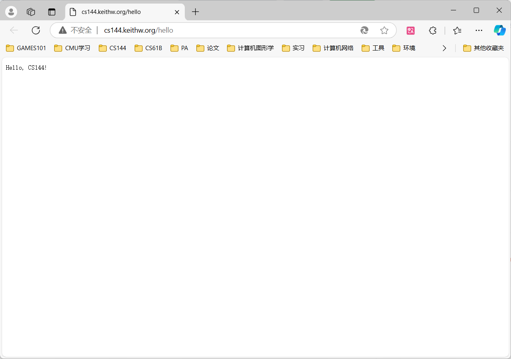
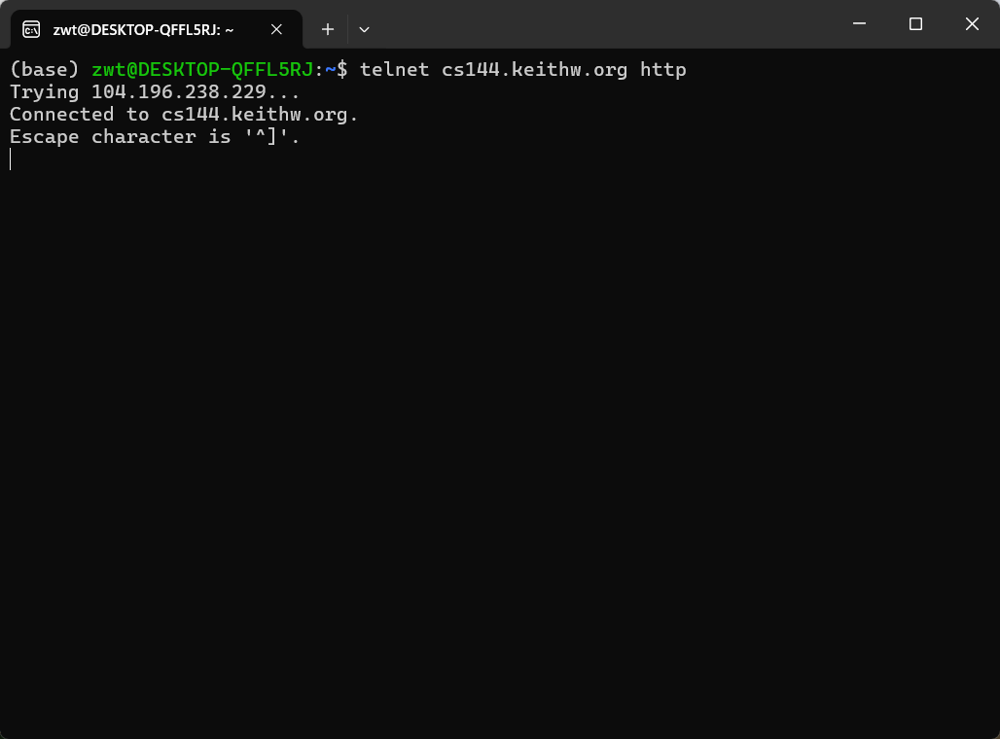

Lab 0：networking warmup
0.介绍
本次热身任务中，你需要在自己的计算机上安装 Linux 系统，学习如何手动通过互联网执行一些任务，用 C++ 编写一个小程序从互联网上获取网页，并在内存中实现网络的一个关键抽象概念：在写入者和读取者之间的可靠字节流。
1. GNU/Linux环境配置
windows:
我使用的环境为Ubuntu 22.04 @ WSL2
运行以下命令安装需要的包
1
2
|
sudo apt update && sudo apt install git cmake gdb build-essential clang \
clang-tidy clang-format gcc-doc pkg-config glibc-doc tcpdump tshark
|
项目编译运行及调试需要的g++ 版本:13及以上
Mac OS:
官方文档中的建议：
If you have a 2020–24 MacBook (with the ARM64 M1/M2/M3 chips), VirtualBox will
not successfully run. Instead, please install the UTM virtual machine software and our
ARM64 virtual machine image from https://stanford.edu/class/cs144/vm_howto/ .
我的配置方法——docker:
dockerfile:
1
2
3
4
5
6
7
8
9
10
11
12
13
14
15
16
17
18
19
|
FROM ubuntu:latest
WORKDIR /usr/src/app
RUN apt-get update && apt-get install -y \
build-essential \
g++-13 \
clang-15
RUN update-alternatives --install /usr/bin/gcc gcc /usr/bin/gcc-13 100 \
&& update-alternatives --install /usr/bin/g++ g++ /usr/bin/g++-13 100 \
&& update-alternatives --install /usr/bin/clang clang /usr/bin/clang-15 100
ENV CC=gcc
ENV CXX=g++
RUN apt-get clean && rm -rf /var/lib/apt/lists/*
CMD [ "/bin/bash"]
|
2. 手动完成网络任务
在 “Networking by hand” 部分，你需要手动完成两项任务：检索网页（就像网络浏览器一样）和发送电子邮件消息（就像电子邮件客户端一样）。这两项任务都依赖于一种称为可靠双向字节流的网络抽象概念。你将在终端中输入一系列字节，相同顺序的字节序列最终将被传递到另一台计算机（服务器）上运行的程序。服务器用它自己的字节序列进行响应，并将其传递回你的终端。
2.1 获取一个网页
- 打开浏览器访问 http://cs144.keithw.org/hello 并观察结果

- 在linux终端中执行和浏览器一样的工作
(a) 运行 telnet cs144.keithw.org http

这会告诉 telnet 程序在你的计算机和另一台名为 “cs144.keithw.org” 的计算机之间打开一个可靠的字节流，并且在那台计算机上运行特定的服务：用于万维网的超文本传输协议（“http” 服务）。如果你的计算机已正确设置并连接到互联网，你将看到如上图相应的输出。
如果你想要退出这个连接，按住键盘的 ctrl 键然后按 ]，之后敲下回车键 Enter 即可
(b) 输入 GET /hello HTTP/1.1，这告诉服务器 URL 的路径部分（从第三个斜杠开始的部分）。
(c) 输入 Host: cs144.keithw.org，这告诉服务器 URL 的主机部分（在 “http://” 和第三个斜杠之间的部分）。
(d) 输入 Connection: close，这告诉服务器你已完成请求，并且它应在回复完成后尽快关闭连接。
(e) 再按一次回车键，这发送一个空行并告诉服务器你已完成 HTTP 请求。
(f) 如果一切顺利，你将看到与浏览器看到的相同响应，前面是 HTTP 头，它告诉浏览器如何解释响应。

2.2 给自己发邮件
略：没有斯坦福的邮箱，无法完成这个任务
2.3 监听与连接
你已经看到了用 telnet 能做什么：它是一个客户端程序，可以与其他计算机上运行的程序建立外出连接。现在是时候尝试运行一个简单的服务器了：即等待客户端连接它的程序。
-
在一个终端窗口中，在你的虚拟机上运行 netcat -v -l -p 9090。
-
让 netcat 保持运行状态。在另一个终端窗口中，运行 telnet localhost 9090。
-
如果一切顺利，netcat 将会打印出类似 “Connection from localhost 53500 received! ” 的内容。
-
现在尝试在任意一个终端窗口中输入内容 —— 无论是 netcat（服务器）窗口还是 telnet（客户端）窗口。注意，你在一个窗口中输入的任何内容都会出现在另一个窗口中，反之亦然。你必须按回车键才能传输字节。
-
在 netcat 窗口中，通过输入 ctrl-C 退出程序。注意，telnet 程序也会立即退出。

3. 使用操作系统流套接字编写网络程序
在本次热身实验的下一部分，你要编写一个简短程序从互联网获取网页。这会利用 Linux 内核及大多数其他操作系统提供的功能，即在两个程序间创建可靠双向字节流，比如一个程序在你的计算机上运行，另一个在互联网上的其他计算机（如 Web 服务器或 netcat 程序）上运行。此功能称为流套接字，对于程序和 Web 服务器来说，它就像普通文件描述符。
但实际上，互联网并不直接提供可靠字节流服务，只是尽最大努力传送数据报，而数据报可能丢失、乱序、内容改变甚至被复制多次。连接两端的操作系统通常负责将 “尽力而为的数据报” 转换为 “可靠字节流”，这是通过 1981 年的传输控制协议（TCP）实现的。
在本次实验中，你将借助操作系统对 TCP 的支持编写 “webget” 程序，创建 TCP 流套接字连接 Web 服务器获取页面。未来的实验中，你将自己实现传输控制协议，从不太可靠的数据报中创建可靠字节流。
3.1 获取并部署原始代码
- 运行
git clone https://github.com/cs144/minnow 拉取代码
- 将项目部署到自己的github仓库
- 进入 Lab 0 的目录：
cd minnow
- 创建build目录来编译程序：
cmake -S . -B build
- 编译源代码：
cmake --build build
查看是否安装g++13版本，对应的路径在哪：

配置默认编译器：nano ~/.bashrc，在文件末尾添加以下两行代码：
1
2
|
export CC=gcc-13
export CXX=clang++-14
|
ctrl+x,Enter 进行保存
运行source ~/.bashrc进行更新
创建build目录

编译

3.2 现代C++编码规范
参考：
http://isocpp.github.io/CppCoreGuidelines/CppCoreGuidelines
https://en.cppreference.com
具体请看源文档：check0.pdf
在push到github之前，运行 cmake --build build --target tidy 以获取有关如何改进与 C++ 编程实践相关的代码的建议，并运行 cmake --build build --target format 以一致地格式化代码。
使用git:
Please make frequent small commits as you work, and use commit messages that identify what changed and why
参考：
https://guides.github.com/introduction/git-handbook
3.3 阅读 Minnow 提供的源代码框架
请仔细阅读公共接口（在文件 util/socket.hh 和 util/file_descriptor.hh 中 “public:” 之后的部分。请注意，Socket 是一种 FileDescriptor 类型，而 TCPSocket 是一种 Socket 类型）。
3.4 编写 webget
现在是时候实现 “webget” 了，这是一个使用操作系统的 TCP 支持和流套接字抽象从互联网上获取网页的程序 —— 就像你在本次实验的早些时候手动所做的那样。
- 从构建目录中，在文本编辑器或集成开发环境（IDE）中打开 “../apps/webget.cc” 文件。
- 在 “get_URL” 函数中实现简单的 Web 客户端。
- 按照文件中的描述，使用之前用过的 HTTP（Web）请求格式。同时要使用 “TCPSocket” 和 “Address” 类。
- 明确了实现的具体位置和所需的类。
- 提示：
- 在 HTTP 中，每行必须以 “\r\n” 结尾，不能仅用 “\n” 或 “endl”。强调了 HTTP 协议的格式要求。
- 客户端请求中要包含 “Connection: close”，告知服务器在本次请求后不再等待更多请求，服务器发送一个回复后就结束传出字节流。当套接字到达 “EOF” 时，表明传入字节流结束，客户端由此知道服务器已完成回复。详细说明了与服务器交互的关键设置。
- 确保读取并打印服务器的所有输出直到套接字到达 “EOF”，单次调用 “read” 是不够的。强调了要完整处理服务器的响应。
- 预计需要写大约十行代码，给出了代码量的大致预期。
-
通过运行 make 编译程序。
-
测试程序。
- 运行
./apps/webget cs144.keithw.org /hello 进行测试。
- 比较与在浏览器中访问 “http://cs144.keithw.org/hello” 的结果以及与 2.1 节结果的差异。鼓励用任何 http URL 进行实验。
- 自动化测试：
- 当程序看似正常工作时，运行 “
cmake --build build --target check webget” 进行自动化测试。
- 在实现 “get_URL” 函数之前，会看到特定的测试结果，包括编译检查通过但功能测试失败，并给出警告和错误信息。完成作业后，测试应全部通过。
webget.cc:
1
2
3
4
5
6
7
8
9
10
11
12
13
14
15
16
17
18
19
20
21
22
23
24
25
26
27
28
29
30
31
32
33
34
35
36
37
38
39
40
41
42
43
44
45
46
47
48
49
50
51
52
53
54
55
56
57
|
#include "socket.hh"
#include "tcp_minnow_socket.hh"
#include <cstdlib>
#include <iostream>
#include <span>
#include <string>
using namespace std;
void get_URL( const string& host, const string& path )
{
CS144TCPSocket sock {};
sock.connect( Address( host, "http" ) );
sock.write( "GET " + path + " HTTP/1.1\r\nHost: " + host + "\r\nConnection: close\r\n\r\n" );
sock.shutdown( SHUT_WR );
while ( !sock.eof() ) {
string recvd;
sock.read( recvd );
cout << recvd;
}
sock.close();
return;
}
int main( int argc, char* argv[] )
{
try {
if ( argc <= 0 ) {
abort(); // For sticklers: don't try to access argv[0] if argc <= 0.
}
auto args = span( argv, argc );
// The program takes two command-line arguments: the hostname and "path" part of the URL.
// Print the usage message unless there are these two arguments (plus the program name
// itself, so arg count = 3 in total).
if ( argc != 3 ) {
cerr << "Usage: " << args.front() << " HOST PATH\n";
cerr << "\tExample: " << args.front() << " stanford.edu /class/cs144\n";
return EXIT_FAILURE;
}
// Get the command-line arguments.
const string host { args[1] };
const string path { args[2] };
// Call the student-written function.
get_URL( host, path );
} catch ( const exception& e ) {
cerr << e.what() << "\n";
return EXIT_FAILURE;
}
return EXIT_SUCCESS;
}
|
进入build目录执行make

运行./apps/webget cs144.keithw.org /hello：

回到minnow目录运行 cmake --build build --target check webget：

3.5 实现内存中的可靠字节流（ByteStream）
你将在一台计算机的内存中实现一个提供这种抽象的对象。字节在 “输入” 侧被写入，并可以从 “输出” 侧以相同的顺序被读取。这个字节流是有限的：写入者可以结束输入，之后就不能再写入更多字节。当读取者读到流的末尾时，它将到达 “EOF”（文件结束），并且不能再读取更多字节。
你的字节流也将进行流量控制，以在任何给定时间限制其内存消耗。该对象在初始化时带有特定的 “容量”：即在任何给定时刻它愿意在自己的内存中存储的最大字节数。字节流将限制写入者在任何给定时刻可以写入的量，以确保流不会超过其存储容量。当读取者读取字节并从流中排出它们时，写入者被允许写入更多。你的字节流用于单个线程中 —— 你不必担心并发的写入者 / 读取者、锁定或竞争条件。
需要明确的是：字节流是有限的，但在写入者结束输入并完成流之前，它可以几乎是任意长的。你的实现必须能够处理比容量长得多的流。容量限制了在给定时刻内存中（已写入但尚未读取）的字节数，但不限制流的长度。一个容量只有一个字节的对象仍然可以承载一个长达数 TB 的流，只要写入者一次写入一个字节，并且在写入者被允许写入下一个字节之前，读取者读取每个字节。
writer的接口如下:
1
2
3
4
5
6
7
|
void push( std::string data ); // Push data to stream, but only as much as available capacity allows.
void close(); // Signal that the stream has reached its ending. Nothing more will be written.*
bool is_closed() const; // Has the stream been closed?
uint64_t available_capacity() const; // How many bytes can be pushed to the stream right now?
uint64_t bytes_pushed() const; // Total number of bytes cumulatively pushed to the stream
|
reader的接口如下:
1
2
3
4
5
6
|
std::string_view peek() const; // Peek at the next bytes in the buffer
void pop( uint64_t len ); // Remove `len` bytes from the buffer
bool is_finished() const; // Is the stream finished (closed and fully popped)?
bool has_error() const; // Has the stream had an error?
uint64_t bytes_buffered() const; // Number of bytes currently buffered (pushed and not popped)
uint64_t bytes_popped() const; // Total number of bytes cumulatively popped from stream
|
请打开 “src/byte_stream.hh” 和 “src/byte_stream.cc” 文件，并实现一个提供此接口的对象。在开发字节流实现的过程中，你可以使用 “cmake --build build --target check0” 运行自动化测试。如果所有测试通过，check0 测试将运行你的实现的速度基准测试。对于本课程而言，任何速度快于 0.1 Gbit/s（换句话说，每秒 1 亿比特）的都是可以接受的。（一个实现有可能执行速度快于 10 Gbit/s，但这取决于你的计算机速度，不是必需的。）
byte_stream.hh:
1
2
3
4
5
6
7
8
9
10
11
12
13
14
15
16
17
18
19
20
21
22
23
24
25
26
27
28
29
30
31
32
33
34
35
36
37
38
39
40
41
42
43
44
45
46
47
48
49
50
51
52
53
54
55
56
57
58
59
60
61
62
|
#pragma once
#include <cstdint>
#include <deque>
#include <string>
#include <string_view>
class Reader;
class Writer;
class ByteStream
{
public:
explicit ByteStream( uint64_t capacity );
// Helper functions (provided) to access the ByteStream's Reader and Writer interfaces
Reader& reader();
const Reader& reader() const;
Writer& writer();
const Writer& writer() const;
void set_error() { error_ = true; }; // Signal that the stream suffered an error.
bool has_error() const { return error_; }; // Has the stream had an error?
protected:
// Please add any additional state to the ByteStream here, and not to the Writer and Reader interfaces.
uint64_t capacity_;
bool error_ {};
std::deque<std::string> buffer_ {};
bool is_closed_ {};
uint64_t pushcnt_ {};
uint64_t popcnt_ {};
uint64_t buffer_bytes_size_ {};
};
class Writer : public ByteStream
{
public:
void push( std::string data ); // Push data to stream, but only as much as available capacity allows.
void close(); // Signal that the stream has reached its ending. Nothing more will be written.
bool is_closed() const; // Has the stream been closed?
uint64_t available_capacity() const; // How many bytes can be pushed to the stream right now?
uint64_t bytes_pushed() const; // Total number of bytes cumulatively pushed to the stream
};
class Reader : public ByteStream
{
public:
std::string_view peek() const; // Peek at the next bytes in the buffer
void pop( uint64_t len ); // Remove `len` bytes from the buffer
bool is_finished() const; // Is the stream finished (closed and fully popped)?
uint64_t bytes_buffered() const; // Number of bytes currently buffered (pushed and not popped)
uint64_t bytes_popped() const; // Total number of bytes cumulatively popped from stream
};
/*
* read: A (provided) helper function thats peeks and pops up to `len` bytes
* from a ByteStream Reader into a string;
*/
void read( Reader& reader, uint64_t len, std::string& out );
|
byte_stream.cc:
1
2
3
4
5
6
7
8
9
10
11
12
13
14
15
16
17
18
19
20
21
22
23
24
25
26
27
28
29
30
31
32
33
34
35
36
37
38
39
40
41
42
43
44
45
46
47
48
49
50
51
52
53
54
55
56
57
58
59
60
61
62
63
64
65
66
67
68
69
70
71
72
73
74
75
76
77
78
79
80
81
82
83
84
85
86
87
88
89
90
91
|
#include "byte_stream.hh"
using namespace std;
ByteStream::ByteStream( uint64_t capacity ) : capacity_( capacity ) {}
bool Writer::is_closed() const
{
// Your code here.
return is_closed_;
}
void Writer::push( string data )
{
// Your code here.
if ( is_closed_ || available_capacity() == 0 || data.empty() ) {
return;
}
uint64_t const push_size = std::min( data.size(), available_capacity() );
if ( push_size < data.size() ) {
data = data.substr( 0, push_size );
}
buffer_.push_back( std::move( data ) );
buffer_bytes_size_ += push_size;
pushcnt_ += push_size;
return;
}
void Writer::close()
{
// Your code here.
is_closed_ = true;
}
uint64_t Writer::available_capacity() const
{
// Your code here.
return ( capacity_ - buffer_bytes_size_ );
}
uint64_t Writer::bytes_pushed() const
{
// Your code here.
return pushcnt_;
}
bool Reader::is_finished() const
{
// Your code here.
return ( is_closed_ && pushcnt_ == popcnt_ );
}
uint64_t Reader::bytes_popped() const
{
// Your code here.
return popcnt_;
}
string_view Reader::peek() const
{
// Your code here.
if ( buffer_.empty() ) {
return {};
}
return std::string_view( buffer_.front() );
}
void Reader::pop( uint64_t len )
{
// Your code here.
uint64_t pop_size = std::min( len, buffer_bytes_size_ );
buffer_bytes_size_ -= pop_size;
popcnt_ += pop_size;
while ( pop_size > 0 ) {
uint64_t const to_pop_size = buffer_.front().size();
if ( to_pop_size <= pop_size ) {
buffer_.pop_front();
pop_size -= to_pop_size;
} else {
buffer_.front().erase( 0, pop_size );
pop_size = 0;
}
}
return;
}
uint64_t Reader::bytes_buffered() const
{
// Your code here.
return pushcnt_ - popcnt_;
}
|
执行自动化测试cmake --build build --target check0：

Check0 Over !!